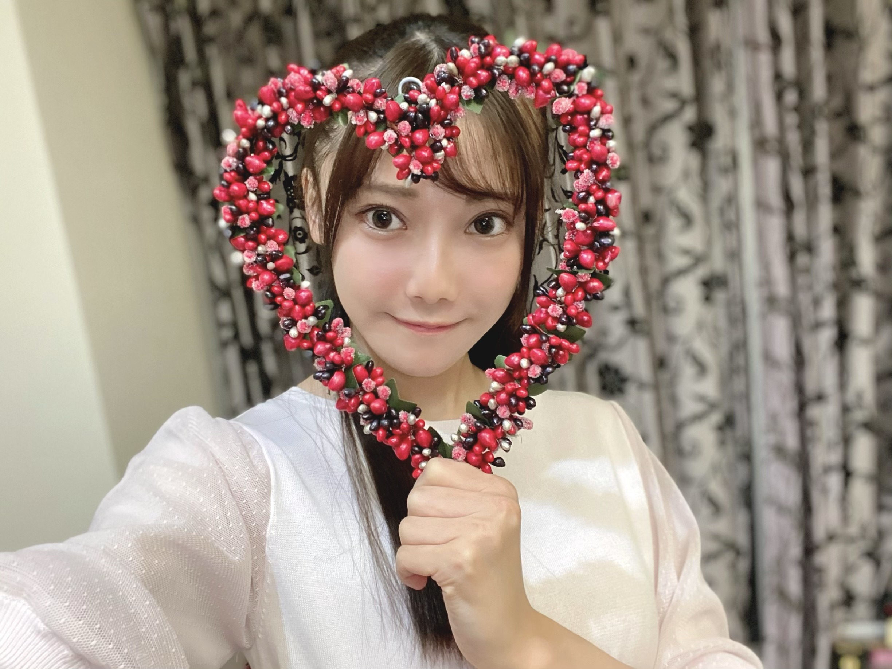
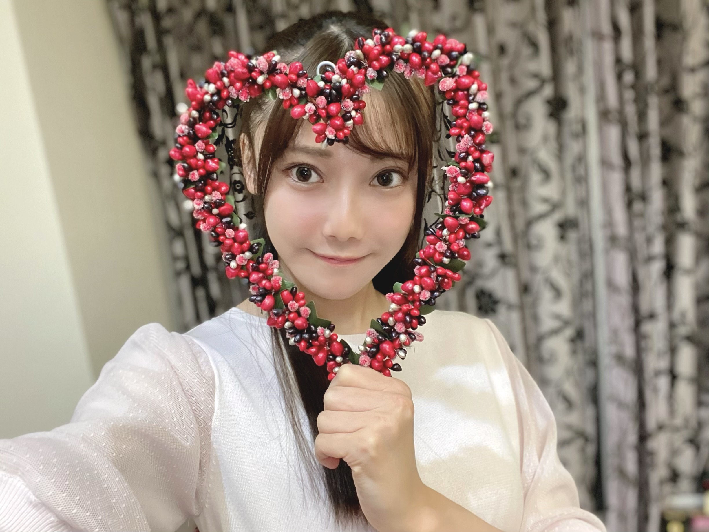

2020/1213Sunもうすぐ初めてのクリスマス ☺︎ 黒見明香(16)
ちゃんと伝わるかな・・？
あなたに出逢えて、ほんとにありがとう。
今年もあと少しだよー！今週もお疲れ様でした✩︎⡱
ココを見つけてくださり ありがとうございます♪
乃木坂46 ４期生の黒見明香です。
すこーしだけ自己紹介させてください☺︎
♪:*:･･:*:･･:*:･･:*:･･:*:･･:*:･♪:*:･･:*:･･:*:･･:*:･･:*:･･:*:･♪
黒見 明香（くろみ はるか）
2004年1月19日生まれ 16才
香港生まれ・東京都出身です
あだ名： くろみん・黒見ちゃん
3の倍数9・6・3(くろみ)
と覚えてもらえたら嬉しいです♪
【 感想をたくさん教えてくれてありがとう✨ 】
⚫︎アフター配信で、フードを被せられるさくちゃんとフードをなんとしても被せたいくろみんの絡みも今回の見所の一つだったかな笑
もこもこフードの『うさぎさくちゃん♡』が可愛すぎたので、
またどこかで可愛いうさぎなさくちゃんが見れたらイイなぁ...✨
（*お仕事や事情で見れなくてごめんねというコメントも話し辛い事、教えてくれてありがとう- きっと遠くないうちに直接会える、見れる日が来るから謝らないでねー！お仕事・勉強みんな頑張ったねー、お疲れ様だよ〜 (*ˊᵕˋ*)੭ ）

-:-:୨୧:-:- ストッパーで『停まってる自転車』の上でおっかなびっくり... いつものワンパターンWピースだよ〜\(//∇//)\ 果して乗れるのだろうか・・・
先日も、幼稚園の子に
"いついつ当選したよー！"と教えてくれてるのもありがとう！

-:-:୨୧:-:- ヤングマガジンさんのオフショット✩︎⡱ 白いワンピースと、おっきなパーカーの２種類着させていただいたよ〜☺︎
⚫︎パーカーで、髪を後ろに結んでいるのが好き!
⚫︎公約のＷピース見つけたよ！緊張していたと思うのに私たちの事忘れずにいてくれて本当に嬉しかった！
⚫︎気づけなかった!?もーくろみん〜〜難しいよ！
⚫︎「I see...」終わり、はける時にもしてた様に見えてしまいました(笑)
映ってたか自信なかったのだけど、見つけてくれて皆んなありがとうー！

♬ *。♩*。♬
⚫︎8th YEAR BIRTHDAY LIVEの特典映像予告編が公開されてたね。研修生時代の白いゼッケンを付けたくろみんたちも映ってたね。表情からは緊張感が伝わってきます。
⚫︎クリスマスの個別生写真買ったから今から届くの凄く楽しみ！！
大切な皆んなのお名前アイディア、
引き続き寄せてくれてありがとう〜ヾ(･ω･*)o
天才すぎて、迷い始めたよー☺︎笑
教えてくれてありがとう！
⚫︎クロワッサン
クロ ： くろみんに
ワッ ： ワッイワイと
サン ： 参加をする
⚫︎ クロミナール、ナルちゃん
⚫︎ 『ネロ』イタリア語で『黒』
⚫︎ 『黒子(ｸﾛｺ)さん達』
そして、お誕生日を迎えるあなたへ・・
✨HAPPY BIRTHDAY✨
どうぞ素敵な一年になりますよう✩︎⡱
♪:*:･･:*:･･:*:･･:*:･･:*:･･:*:･♪:*:･･:*:･･:*:･･:*:･･:*:･･:*:･♪
ここまで読んでくださったアナタ、ほんとうにありがとう♡
またねヾ(･ω･*)
ココを見つけてくださり ありがとうございます♪
乃木坂46 ４期生の黒見明香です。
すこーしだけ自己紹介させてください☺︎
♪:*:･･:*:･･:*:･･:*:･･:*:･･:*:･♪:*:･･:*:･･:*:･･:*:･･:*:･･:*:･♪
黒見 明香（くろみ はるか）
2004年1月19日生まれ 16才
香港生まれ・東京都出身です
あだ名： くろみん・黒見ちゃん
3の倍数9・6・3(くろみ)
と覚えてもらえたら嬉しいです♪
頂いたコメントから↓
◎ ヤンマガ見ました
靴下が破れてるとは思えないお嬢様のスマイルでしたね！ 笑
本当に・・・\(//∇//)\汗
"たたみ"の楽屋で、靴を脱いで正座していたら、
マネージャーさんに、後ろから、
「くろみ、靴下穴空いてるよ・・？」
と指摘され・・・
びっくりして、みんなで転げながら大笑いして、
すごーく恥ずかしかったです。。。
カッコつけてても、なんか起きるのはナゼ！？笑
黒歴史エピソード☺︎笑↓
＊
◎靴下に穴が空いてたら、サンタさんがプレゼント入れられない
大変だ・・Σ（ﾟдﾟll）
そんな私に、スタッフさんが"クリスマスプレゼント"として下さった
「雪だるま柄」の靴下。
大切に飾って、12月24日を待ちたいなぁ。。と思ってるよ〜！
今年は、果たしてサンタさん来るかなぁー？笑
寒い季節だけど、皆んなのとこにも、
ホッとするあたたかい出来事が起きますように〜✨
♪:*:･･:*:･･:*:･･:*:･･:*:･･:*:･♪:*:･･:*:･･:*:･･:*:･･:*:･･:*:･♪

-:-:୨୧:-:- 大切な皆んなとの初めてのクリスマス♪ワクワクしてるよ〜☺︎

-:-:୨୧:-:- 大切な皆んなとの初めてのクリスマス♪ワクワクしてるよ〜☺︎
【 感想をたくさん教えてくれてありがとう✨ 】
4期生ライブ2020の感想を、本当にたくさん書いてくださってありがとう！
みんなの気持ちがまっすぐ伝わってきて、
涙したり笑ったりしながら
一つ一つ大切に読ませていただいているよー (*ˊᵕˋ*)੭
⚫︎一番苦戦したダンスはなんだった??
⚫︎ポピパッパパー、ダンスかっこよかった！
先輩方の大切な曲で、カッコイイ楽曲なので、
未熟な私も...楽曲の世界観を邪魔しないよう、
染まれるようにと、家の鏡の前で必死で練習していました。
メンバーをよく見ていてくれるかっきー♡が気付いてくれて、
『ポピパッパパー良かったよー、よく頑張ったよ〜！』
と優しく声を掛けてくれて、すっごく嬉しかったです((〃ω〃))
＊
ダンサーの先生方にも、
「お姉さん達のように優雅に、美しくがまだ難しいのなら、
見てくださってる方々のために、乃木坂のために、
がむしゃらに汗かいて、全力で、笑顔で駆け抜けることが
今出来る一番のことだよ！」と教えていただいて、
乃木坂を支えてくださる皆さんが見てくださっていて、
拙い不出来なところはたくさんあったと思うのですが...
全力で！乃木坂が、楽曲が、皆さんが、大好きな気持ちが
伝わっていたら、嬉しいなぁ。。と思いました。
♬ *。♩*。♬
⚫︎ライブ中ずっと楽しそうにしていてこっちまで楽しくなりました！
ライブはやっぱり楽しかったですか？
乃木坂の楽曲も大好きなので、本当に幸せでした♡
インフルエンサーの歌も、トキトキメキメキのウインクも、
Threefold choiceのクリスマス姿も、、、
たくさん気付いてくださって本当にありがとう((〃ω〃))
⚫︎初めから16人だけど、訳あって5人が遅れて合流したと。5人がいつでも合流できるよう11人が道を作って手を伸ばしてくれたような。
⚫︎翌日のレコメンで4期生の黒見明香です！って、りかちゃんと名乗っていたので本当に泣きそうなぐらい良かったなと思いました。
もう4期生だね、おめでとうとお祝いして下さった皆んなも、
11人に並べるように、覚悟を持って努力してねと激励して下さった皆んなも、
本当にありがとう〜><
こうして大切に4期生を育ててきてくれて
手を差し伸べて教えてくれた大好きなメンバーのことを
これからも見習って、力を合わせて
頑張って行きたいです！
どうぞ一緒に、坂を登ってくれたら嬉しいな (*ˊᵕˋ*)੭
一緒に、いっぱい幸せになろうねー☺︎♬
♬ *。♩*。♬
⚫︎アフター配信で、フードを被せられるさくちゃんとフードをなんとしても被せたいくろみんの絡みも今回の見所の一つだったかな笑
もこもこフードの『うさぎさくちゃん♡』が可愛すぎたので、
なんとしても見ていただかねばー！と思ったのですが、、、
マイク片手でなかなか苦戦していました\(//∇//)\
またどこかで可愛いうさぎなさくちゃんが見れたらイイなぁ...✨
（*お仕事や事情で見れなくてごめんねというコメントも話し辛い事、教えてくれてありがとう- きっと遠くないうちに直接会える、見れる日が来るから謝らないでねー！お仕事・勉強みんな頑張ったねー、お疲れ様だよ〜 (*ˊᵕˋ*)੭ ）
♪:*:･･:*:･･:*:･･:*:･･:*:･･:*:･♪:*:･･:*:･･:*:･･:*:･･:*:･･:*:･♪
-:-:୨୧:-:- ストッパーで『停まってる自転車』の上でおっかなびっくり... いつものワンパターンWピースだよ〜\(//∇//)\ 果して乗れるのだろうか・・・
【 乃木坂46山崎怜奈とおはつちゃん
＃17 『自転車に乗りたい！』 】
⚫︎19日の、おはつちゃん。くろみん自転車に乗れたかな？
⚫︎くろみん初ロケでしかも１人ってことだよね？？
⚫︎くろみん初ロケでしかも１人ってことだよね？？
そうなのですー！
来週は運動神経が悪く、憧れでコンプレックスだった、
＜自転車チャレンジ＞が放送されます〜 (*ˊᵕˋ*)੭
初めてのロケ、初めての1人挑戦になります✨
◎ひかり TV・dTVチャンネルにて
12月19日(土)22:00〜22:30 放送だよ〜
先日も、幼稚園の子に
「......あのお姉ちゃん、大丈夫？( ꒪⌓︎꒪) 」と
ポカンと心配されていた私。。。ぜひご期待！？くださいね☺︎
♬ *。♩*。♬
⚫︎伊藤純奈先輩の「のぎおび」「陰ながら応援している、なかなか話しかけられないけど、かわいいい」。一生懸命さに「ほっとけない」存在なんですって‥‥。
大切な先輩方に心配かけすぎていて申し訳ないです｡ﾟ(｡ﾉω＼｡)ﾟ｡
それと共に、憧れの純奈さん♡をはじめ、
乃木坂の先輩方は、優しく見守って下さっていて、
落ち込んだ時に、そっと寄り添って下さる温かさに
新しいことを体験する毎に、
感動して、胸が熱くなってしまいます。
＊
私もいつか、大好きな先輩方のように
皆さんが落ち込んだり元気がない時に、
寄り添えるよう、少しでも元気をくれるように
そんな"乃木坂らしさ"を身につけられるよう
先輩方を見習って精一杯頑張りたいです。
22歳の純奈さんも美しくて眩しいですよね((〃ω〃))
純奈さんの目が大好きです✨
♬ *。♩*。♬
【 オンライン ミート＆グリート♡（個別トーク会）】
⚫︎今からミーグリが楽しみで楽しみで。どんな髪型で、どんなファッションで迎えてくれるんだろう。早く会いたいな。
わたしもやっと！皆んなと初めてお話できるのが
すっごく楽しみで、今から"こんな格好しようかな〜" "あのお話しようかなー！"と
たくさん想像して、心待ちにしてるんだよー✩︎⡱
⚫︎らじらー！で発明した『クロミーアキャット』は今後の握手会でどのように使う？
会ってのお・た・の・し・み笑なのだけど...
らじらー！で皆んなで決めてもらった必殺技も
上手に決められるよう、こっそり秘練習していくね〜☺︎
らじらー！で皆んなで決めてもらった必殺技も
上手に決められるよう、こっそり秘練習していくね〜☺︎
皆もいっぱい覚えるねヾ(･ω･*)o
"いついつ当選したよー！"と教えてくれてるのもありがとう！
すっごく楽しみです((〃ω〃))
本当に！「やっと、会えたね」だね✨
♪:*:･･:*:･･:*:･･:*:･･:*:･･:*:･♪:*:･･:*:･･:*:･･:*:･･:*:･･:*:･♪
-:-:୨୧:-:- ヤングマガジンさんのオフショット✩︎⡱ 白いワンピースと、おっきなパーカーの２種類着させていただいたよ〜☺︎
【 週刊ヤングマガジンNo.2・3号
乃木坂46スペシャルグラビアジャック 】
乃木坂46スペシャルグラビアジャック 】
発売中のヤングマガジンさんに、表紙の齋藤飛鳥さん♡
寺田蘭世さん♡ 佐藤楓さん♡ 金川紗耶ちゃん♡と共に、
巻末グラビアとして、５人で登場させて頂いています〜
⚫︎パーカーで、髪を後ろに結んでいるのが好き!
ありがとうー！オフショットも載せさせてね〜
パーカーで遊んでるアホな写真も撮ってもらってたので、
また次回オフショット番外編も！？
よかったら見てくれたら嬉しいな〜☺︎笑
＊
⚫︎ヤンマガ、プレゼントのチェキはダブルピースなんですね。笑 欲しいなぁ。
チェックして下さってありがとう(*´-`)
気持ちを込めてWピースしてるので
見てくださってるあなたに届くといいなぁ〜♡
♬ *。♩*。♬
【 4期生ライブ2020・番外編☺︎ 】
⚫︎公約のＷピース見つけたよ！緊張していたと思うのに私たちの事忘れずにいてくれて本当に嬉しかった！
⚫︎気づけなかった!?もーくろみん〜〜難しいよ！
むずかしかったよねー！ごめんねー\(//∇//)\
もちろん、もちろん！ライブ中も、トナカイの映像撮る時にもいつも心に一緒にココの皆んなが居たんだよ〜！
リクエスト頂いたライブでの公約のお話はココだよー☺︎↓
⚫︎「I see...」終わり、はける時にもしてた様に見えてしまいました(笑)
映ってたか自信なかったのだけど、見つけてくれて皆んなありがとうー！
『963レア賞』を差し上げますヾ(･ω･*)o笑
♬ *。♩*。♬
私は間に合わないので、必死で猛ダッシュε==(.≧ω≦)っ
I see...の一番終わりも、全力ダッシュ斜めに列になんとかイン
♬ *。♩*。♬
＜ちょこっと裏話！？笑＞
⚫︎4期生ライブでのエピソードはありますか？あったら、教えてください！
⚫︎図書室の君への所でみんな急いで移動していたね。
実は・・・
実は・・・
「配信ライブ」ならではの、
①メインステージ
②ダンスステージ
③イルミネーションステージ
④"NOGIROOM"ステージ
と、４つのステージと、
会場を広く使っていたので、
ダンサーの先生から
『 体感 5 0メートル 13秒くらいで！ 』
とご指導があり、
運動神経が悪く、かけっこ毎年ビリの私は...
"こ、これは体育のテスト位の本気ダッシュだ( ꒪⌓︎꒪)"
と、一番心配していました。。。汗
＊
図書室から手裏剣に移動する時は
「くろみ最後(遅っ)！弓木ちゃん先通してー！」
トキメキで後ろから出てくるところは
レイちゃんは余裕で楽しく出てこれるのですが、
私は間に合わないので、必死で猛ダッシュε==(.≧ω≦)っ
I see...の一番終わりも、全力ダッシュ斜めに列になんとかイン
・・・と、たびたび全力で走っていました\(//∇//)\笑
＊
これからに備えて、筋トレや走り込みをせねば。。。
と反省しながら、必死でヒールで、
ステージ間を全速力ダッシュしていました。。( ˙-˙ ; )ふふ
♪:*:･･:*:･･:*:･･:*:･･:*:･･:*:･♪:*:･･:*:･･:*:･･:*:･･:*:･･:*:･♪
-:-:୨୧:-:- この日のための、4期生ライブロゴ、看板も大切な想い出となりました〜✩︎⡱
【 文化放送「レコメン!」 乃木坂 4 期生・メガ盛り祭り✨ 】
⚫︎レコメンで言ってた、まゆちゃんのお尻を殴ったのは気が付かなかったな(笑)
⚫︎「私にとってのパーティはお仕事の現場」、ナイスな返しで爆笑したよ！
まゆたん♡とごめんね合戦になっちゃった後日談まで
まゆたん♡とごめんね合戦になっちゃった後日談まで
お話してくれて、優しくてありがたかったよー\(//∇//)\
マイクがまゆたんのお尻にストレートに入ってしまって...
本当に反省です。。
＊
そして、お仕事の現場は、皆んなと
楽曲や番組を通じて、コミュニケーションできるから
やっぱり"パーティ"一番楽しみにしてる嬉しい場所だなーって
感じています。
たくさんのコメントやメッセージも本当にありがとうございます!!
引き続き明日からも・・・22:00〜
12月14日 賀喜遥香、北川悠理
12月15日 遠藤さくら、早川聖来
12月16日 田村真佑、金川紗耶、弓木奈於
のメンバーで出演させて頂きます！（ちゃん略です☺︎）
是非楽しみにしててくださいね〜！
♬ *。♩*。♬
【ノギザカスキッツ ACT2】
⚫︎くろみんが来週の予告に出ててコントに初登場だね！あの感じだとあのコントかな...？？
「しりとれ！HIP CATCH PARTY！②」
楽しく、いっぱい笑顔になりながら、参加させて頂いてます〜
どんな風に仕上がってるかなぁ。。わたしもドキドキです(*´-`)笑
藤森慎吾さんとの「照負倶楽部」の華麗なチャイナドレス姿も楽しみですね〜✨
毎週火曜午前1:29〜、どうぞお楽しみに☺︎
♬ *。♩*。♬
【 乃木坂46 アンダーライブ 2020✩︎⡱ 】
⚫︎アンダーライブに人と行くことになりました!スティックバルーンの特典があるそうで、野球の応援みたいで楽しそう(笑)
スティックバルーン楽しみですよねー！
久々の有観客でのライブ✨
ライブ配信もされるので、是非是非楽しんでくださいね！
① 12月18日(金) 開場 16:30 ／ 開演 18:00 《ライブ配信予定》
② 12月19日(土) 開場 16:30 ／ 開演 18:00 《ライブ配信予定》
③ 12月20日(日) 開場 16:30 ／ 開演 18:00 《ライブ配信予定》
もちろん、わたしも観ますよー!!
純奈さん♡もおっしゃってた『熱いアンダーライブ』
一緒に盛り上がりましょうね〜 (*ˊᵕˋ*)੭
♬ *。♩*。♬
⚫︎8th YEAR BIRTHDAY LIVEの特典映像予告編が公開されてたね。研修生時代の白いゼッケンを付けたくろみんたちも映ってたね。表情からは緊張感が伝わってきます。
◯本当に緊張しました。先輩方、スタッフの皆さんにたくさん助けられました。合計200曲の涙と幸せの詰まっている作品、12/23発売です☺︎
懐かしの名古屋ドームでのエピソード↓
◯ありがとうー！レアな緑のサンタさん衣装を着ているので、どうぞ一緒にクリスマス気分を味わえたら嬉しいな〜ヾ(･ω･*)o
♪:*:･･:*:･･:*:･･:*:･･:*:･･:*:･♪:*:･･:*:･･:*:･･:*:･･:*:･･:*:･♪
ブログやお手紙で、たくさんのコメントや感想送って下さり
本当にありがとうございます✩︎⡱
恥ずかしくて、実は初コメントなんだーというあなたも、
こないだの続きのお話を教えてくださるあなたも、
大切な時間を使ってお話しして下さり
本当にありがとうございます✨
あなたに出逢えた奇跡に、感謝しながら、
大事に、一つずつ全部読ませて頂いています((〃ω〃))
皆さんのことを知ることが出来る、
私の１日の中で『１番幸せな時間』です♩
いよいよ１月から！初めての個別トーク会で、
直接お話しできる時が、 今からとっても待ち遠しいです✩︎⡱
＊
いよいよ年末が近付いてきて、仕事や勉強が忙しかったり、
なんだか体調イマイチだよー、疲れちゃったよーって方も
本当に、お疲れ様でした✩︎⡱
きっと心も、身体も、しんどい時もあるかと思います。。
どうぞ、皆さんが 少しでも
ひとときリラックスできますように...✩︎⡱
と願っています(*´-`)
初めて会える日を、楽しみに待っています♪
＊
明日は、いっぱい歩いただけで褒めてくれる
ブログやお手紙で、たくさんのコメントや感想送って下さり
本当にありがとうございます✩︎⡱
恥ずかしくて、実は初コメントなんだーというあなたも、
こないだの続きのお話を教えてくださるあなたも、
大切な時間を使ってお話しして下さり
本当にありがとうございます✨
あなたに出逢えた奇跡に、感謝しながら、
大事に、一つずつ全部読ませて頂いています((〃ω〃))
皆さんのことを知ることが出来る、
私の１日の中で『１番幸せな時間』です♩
いよいよ１月から！初めての個別トーク会で、
直接お話しできる時が、 今からとっても待ち遠しいです✩︎⡱
＊
いよいよ年末が近付いてきて、仕事や勉強が忙しかったり、
なんだか体調イマイチだよー、疲れちゃったよーって方も
本当に、お疲れ様でした✩︎⡱
きっと心も、身体も、しんどい時もあるかと思います。。
どうぞ、皆さんが 少しでも
ひとときリラックスできますように...✩︎⡱
と願っています(*´-`)
初めて会える日を、楽しみに待っています♪
＊
明日は、いっぱい歩いただけで褒めてくれる
優しいお姉さん、璃果ちゃんですよ〜♬
読んでくださり、本当にありがとうございます☺︎
次回も、会えたら嬉しいなぁ✨
またねヾ(･ω･*)
くろみはるか☺︎
☆ 明日のあなたのラッキーナンバー：❷ と ❺
♪:*:･･:*:･･:*:･･:*:･･:*:･･:*:･♪:*:･･:*:･･:*:･･:*:･･:*:･･:*:･♪
・
・
・
＜ちょこっとアンコール♬笑＞
〜クロミ・ル・フィーユ〜
（クロ見るFeel YOU☺︎）
読んでくださり、本当にありがとうございます☺︎
次回も、会えたら嬉しいなぁ✨
またねヾ(･ω･*)
くろみはるか☺︎
☆ 明日のあなたのラッキーナンバー：❷ と ❺
♪:*:･･:*:･･:*:･･:*:･･:*:･･:*:･♪:*:･･:*:･･:*:･･:*:･･:*:･･:*:･♪
・
・
・
＜ちょこっとアンコール♬笑＞
〜クロミ・ル・フィーユ〜
（クロ見るFeel YOU☺︎）
２回分なので、長いよ〜汗
楽屋でおしゃべりしてる感じなので、
どうぞお時間のある時にでも、
覗いてみてねっ (*ˊᵕˋ*)੭✨
♬ *。♩*。♬
⚫︎生誕グッズ、野球のユニフォームを意識したデザインのシャツいいね。アイドルとファンはお互いを応援しあって絆を深めていく。まさに応援のキャッチボール。
◯「応援のキャッチボール」素敵な言葉ですね〜 (*ˊᵕˋ*)੭
⚫︎生誕グッズ、野球のユニフォームを意識したデザインのシャツいいね。アイドルとファンはお互いを応援しあって絆を深めていく。まさに応援のキャッチボール。
◯「応援のキャッチボール」素敵な言葉ですね〜 (*ˊᵕˋ*)੭
いつも私の下手なボール、投げ返してくれて、ありがとうー!!
♬ *。♩*。♬
⚫︎次回ブログは来年の抱負を聞きたいです
◯じっくり考えて、もう少しだけ後のブログに書かせてねヾ(･ω･*)o
⚫︎クリスマスプレゼントを貰うなら何が欲しいですか?
◯向井葉月さん♡とゲームでフレンドになりたくって、頑張って貯めてるの〜、少しでも早く目標に近付けるようおもちゃ券かなぁ...笑
♬ *。♩*。♬
⚫︎次回ブログは来年の抱負を聞きたいです
◯じっくり考えて、もう少しだけ後のブログに書かせてねヾ(･ω･*)o
⚫︎クリスマスプレゼントを貰うなら何が欲しいですか?
◯向井葉月さん♡とゲームでフレンドになりたくって、頑張って貯めてるの〜、少しでも早く目標に近付けるようおもちゃ券かなぁ...笑
なんてダメな気がするので、大事な皆んながクリスマス寂しくないといいなぁ。。て思ってるよー！クリスマスもコメント読んだり、心を一緒に過ごしたいな〜♬
♬ *。♩*。♬
大切な皆んなのお名前アイディア、
引き続き寄せてくれてありがとう〜ヾ(･ω･*)o
天才すぎて、迷い始めたよー☺︎笑
教えてくれてありがとう！
⚫︎クロワッサン
クロ ： くろみんに
ワッ ： ワッイワイと
サン ： 参加をする
⚫︎ クロミナール、ナルちゃん
⚫︎ 『ネロ』イタリア語で『黒』
⚫︎ 『黒子(ｸﾛｺ)さん達』
♬ *。♩*。♬
⚫︎くろみんのダブルピース！を真似して？最近ダブルピースするようになっちゃいました！笑
◯お揃い！嬉しいねーヾ(･ω･*)o
⚫︎トゥエルブ黒林、カタカナにスペルって言い方使う人初めて見たかも(笑)
◯ホントだ！カタカナはスペルじゃないよね汗
なんだろう。。。カタカナ書き順？むずかしいね\(//∇//)\笑
⚫︎部活で注意ができないんですって相談したの覚えてますか？それが最近注意、できるようになったんです......!
◯勇気出してすごいね！一歩進めてわたしも嬉しいよー><
◯お揃い！嬉しいねーヾ(･ω･*)o
⚫︎トゥエルブ黒林、カタカナにスペルって言い方使う人初めて見たかも(笑)
◯ホントだ！カタカナはスペルじゃないよね汗
なんだろう。。。カタカナ書き順？むずかしいね\(//∇//)\笑
⚫︎部活で注意ができないんですって相談したの覚えてますか？それが最近注意、できるようになったんです......!
◯勇気出してすごいね！一歩進めてわたしも嬉しいよー><
♬ *。♩*。♬
＜ゲームコーナー☺︎笑＞
⚫︎ プロスピ交換会今の段階欲しい選手手に入った？
◯手に入ってないよ〜
欲しい選手が手に入りますように！
⚫︎ 最近はプロスピばっかりしてて勉強全然できません笑
◯プロスピも大事だけど勉強も自分にとって大事だからがんばってね☺︎
（わたしもだよね\(//∇//)\汗）
⚫︎ あっプロスピの質問なんだけども、キャプテン誰にしてる？
◯今はキャプテンをSの極みプラスの海外で活躍なさってるピッチャーにしてるよ〜
⚫︎ くろみんは今リーグオーダーいくつ？
◯今はリーグオーダー72000くらいだよ〜
⚫︎ プロスピ最近リアタイ少しやっててプラチナランクには行けました！
◯プラチナランクおめでとう！
リアタイ最近やってないからまたやろうかな〜
⚫︎ 最近プロスピで当たった選手は誰ですか？
◯ポジションがライトの選手だよ〜
⚫︎ 正月スカウト、ワールドスター、OBとか引きたいのが多すぎてエナジー足りない笑
俺も頑張ってエナジー貯めるね
◯私も頑張って貯めようと思ってるよ！
一緒に頑張ろうね☺︎
⚫︎プロスピ交流戦やってますか？
◯うん！やってるよ〜
今の所1位だよ☺︎
⚫︎プロスピ交流戦リーグレベルSに入りました。
◯すごいね！！私はリーグレベルEだよ！
いつかS行けるように頑張る☺︎
⚫︎ ブログ見てて思い出したけど私も乃木フェス入賞しました！もちろんくろみん枠で！
◯乃木フェス入賞おめでとう！そしてありがとう☺︎嬉しいな！
⚫︎ 乃木恋の彼氏イベント、、
わたし、気づくの遅くて全然順位上位に入れなかった...
もう少し、頑張ってたら、彼氏確定枠に入れてたのに...
次は頑張ろ...
◯イベントに気づいてくれてありがとう☺︎次また報告も待ってるね！
⚫︎ 乃木恋の彼氏イベントで黒見ちゃんレーン2位になる事が出来ました。次は1位取ります！！笑
◯2位おめでとう！嬉しいな☺︎
⚫︎ あと、乃木恋で無事に彼氏になれました！ 頑張ったよー！
◯彼氏イベントお疲れ様！
今日から私の彼氏嬉しいな☺︎
何位だったよー、ここ頑張ったよー、ていうエピソードも沢山教えてくれてありがとうヾ(･ω･*)o
⚫︎ ちなみに黒見ちゃんは乃木恋やっていますか！？
◯乃木恋やってるよ〜！イベント終わったみんなお疲れ様でした！
お迎えに行ったよー！てお話もありがとう〜♡
⚫︎ 13日に珍プレー好プレーやるね
くろみん見るの？
◯やるんだね！知らなかった！教えてくれてありがとう☺︎多分見ると思うよ〜
⚫︎ くろみんはボードゲームとかはするの〜？
◯うん！するよ！中学の時の英語部ではよく英語版のボードゲームとかやってたから好きだよ！
⚫︎ くろみんとも、何かゲーム出来たら楽しいだろうな～
◯私もいつかあなたとできたら良いな！
ミート＆グリートでゲームのお話もできたらいいな☺︎
RPGのこと、テイルズオブデスティニー、ボンバーマンのお話もありがとう〜‼︎
♬ *。♩*。♬
個別トーク会取れたよー！生誕TシャツやグッズGETしたよ〜、トーク会でグッズや生写真見せてくれるよー！てお話も（ドキドキ(*´-`)）伝えてくれてすごく嬉しいです！本当にありがとう✩︎⡱
福袋、お餅やミニトマトの話も、冬のデザートのお話、ミート＆グリートのお話、研修生ツアーのアカペラの事、海外からの方も、呪術廻戦やどんぶり委員長のこと、ふたご座流星群のこと、雪寄せ雪投げ、ヘアアレンジのこと、詠春拳講座のエピソード、人が何者なのかの哲学のお話も、5軍リスナーさんも(私もだよ)、映画監督の北野武さんのお言葉、ヌンチャクサイリウム、X'mas ExpressのCMのお話、ハノーファー96☺︎や高校生クイズのお話、ピザの具、カイロのこと、誕生日のこと、のぎ動画のこと、宇宙の匂いと香水のお話、46時間TVで好きになったよというお話も(ありがとう!) 漫画葬送のフリーレン、ごっつええ感じ、オーディションの歌のお話も、
一つ一つ大切に読ませて頂いたよ〜 (*ˊᵕˋ*)੭ 書いてくれてありがとう！
＊
サザンオールスターズさんのエピソード、My Hari is badさん、ワン・ダイレクションさん、クラシックなショパン、東京スカパラダイスオーケストラさんのお話、Vaundyさん、OKOJOさん、稲垣潤一さん、氷室京介さん、松山千春さのこと、皆んなの好きな曲が知れて、嬉しいです。教えてくれてありがとう☺︎
＊
受験やテスト期間、点検日やインターンシップ頑張るよー！て方も、理系や、次のテストで頑張るよー涙！来年春から上京するよー！て方も、合格したよー！て報告も（凄いね、本当におめでとう！）、焦るけれど、受験まで頑張るよーていうお話も（冬休みも大変だけど、一緒に頑張ろうね！）、推してて幸せですっていうお話も（私も出逢えて幸せだよ〜☺︎ありがとう！）、入院生活してるよー、足怪我しちゃったよーて方、どうぞお大事に><！よくなりますように✨、サイン入りのチェキ、直筆メッセージカード当たったよー！(おめでとう♡)て報告も、
受験やテスト期間、点検日やインターンシップ頑張るよー！て方も、理系や、次のテストで頑張るよー涙！来年春から上京するよー！て方も、合格したよー！て報告も（凄いね、本当におめでとう！）、焦るけれど、受験まで頑張るよーていうお話も（冬休みも大変だけど、一緒に頑張ろうね！）、推してて幸せですっていうお話も（私も出逢えて幸せだよ〜☺︎ありがとう！）、入院生活してるよー、足怪我しちゃったよーて方、どうぞお大事に><！よくなりますように✨、サイン入りのチェキ、直筆メッセージカード当たったよー！(おめでとう♡)て報告も、
一つ一つ、頷いたり、驚いたりしながら読ませて頂いてるよー！送ってくれてありがとう (*ˊᵕˋ*)੭
♬ *。♩*。♬
そして、お誕生日を迎えるあなたへ・・
✨HAPPY BIRTHDAY✨
どうぞ素敵な一年になりますよう✩︎⡱
♪:*:･･:*:･･:*:･･:*:･･:*:･･:*:･♪:*:･･:*:･･:*:･･:*:･･:*:･･:*:･♪
ここまで読んでくださったアナタ、ほんとうにありがとう♡
またねヾ(･ω･*)
2020/12/13 18:00

PROFILE
新4期生リレー
202104
| SUN | MON | TUE | WED | THU | FRI | SAT |
|---|---|---|---|---|---|---|
| 1 | 2 | 3 | ||||
| 4 | 5 | 6 | 7 | 8 | 9 | 10 |
| 11 | 12 | 13 | 14 | 15 | 16 | 17 |
| 18 | 19 | 20 | 21 | 22 | 23 | 24 |
| 25 | 26 | 27 | 28 | 29 | 30 | |

コメント(214)
2020年もおしまいだね…
クリスマス ､お正月 …
あっという間に〜
2020年一番の思い出何？
2番目も気になるな〜
4期生ライブについてはファンの方からいろいろ感想言って貰えてよかったね！
本当に素敵だったから、みんな思うことは一緒！
次のライブはいつかまだわからないけど、もう早く観たいな(笑)
そしてミーグリも前回取れたとお話ししましたが今回また増やしました(笑)
早く会えることが待ち遠しい…
そして今日は日曜日なのでゆっくりくろみんのブログが見れて嬉しいのですよ…
コメントしたあとも何度か見直すんです(笑)
読みごたえがあるので、何回か見ると新しい発見が！
そんなところも面白いんです、くろみんのブログは。
それではまた明日から平日ですが、がんばりましょ！
くまくまでした！
くろみんこんばんは！！
ミーグリ取ったからお話出来るの楽しみにしてるよ♪
生誕Tシャツも買ったから届くの本当楽しみだよ⁽⁽ ◟(∗ ˊωˋ ∗)◞ ⁾⁾
最近あまり書き込めてなくてごめんね。
私事ですが、明後日の１２月15日に、16歳になります！
裏話教えてくれてありがとー！
私、かけっこで毎年どべで、50m13秒くらいでした。早く走れるようになりたい(*^▽^*)
今年も、もう終わりだね。 お疲れ様です。
黒見ちゃんを推すことができてとても幸せです！
質問です！
雪が降り始める時期ですが、黒見ちゃんは、雪遊びすきですかー？ また、エピソードありましたら、教えてください！
お体にお気をつけてお過ごしください。
また、書き込むねー！
またねー！
初めて読んだブログでもくろみんは凄いしっかり書いてるなーって思ってたけど毎回こんなに丁寧に書いてるのか！ってびっくりしました笑
ちゃんとコメント読んでくれてるんだなって言う安心感があってついついコメントしたくなっちゃいます笑
5日に1回の楽しみが出来ました！学校やお仕事で忙しいのにありがとう(^^)
またね〜！
ブログ更新楽しみにしてたよ〜！
くろみちゃんのブログは楽しみの中の一つだからいつもワクワクして読んでるよ！
今日櫻坂46のミーグリでみんな楽しそうにしてたからわたしもはやく、くろみちゃんとお話したいな〜〜ってずっと考えてたーー！( ^ o ^ )（笑）
来月楽しみだな〜長いようであっという間に来そうだからドキドキ止まらん〜〜( ◠‿◠ )たくさんお話しようね！やっと会えるもんね！
そして、しょーもないけど、くろみちゃんにやってほしい格好があるの〜〜( •̥ ˍ •̥ )
地雷とか量産の女の子って可愛いじゃん！(伝わるかな〜？イコラブのしゅきぴのMVのような感じのお洋服！！)
絶対絶対くろみちゃん地雷似合うと思うんだ〜！o( ^_^ )o❤︎
ハーフツインがめちゃくちゃ似合ってたし可愛かったから！
黒見ちゃんとクロミちゃんだし絶対絶対可愛いし似合うと思う〜〜(>_<)♡
清楚系の乃木坂のイメージとはかけ離れるけど、
いつか見れたらいいなー！
今日は黒染めしたの〜〜くろみちゃんに初めて会う日も多分黒髪で会うよ〜〜( ◠‿◠ )❤︎
8thバスラのBluRay予約してるから4日目のくろみちゃん見れるの本当に楽しみ！実は、1日目と2日目しか当たらんかったから、ちゃんと映像見れるの本当にワクワクする( •̥ ˍ •̥ )❤︎
明日も一緒に頑張ろうね！
大好きだよー！全力で応援するー！
楽しくみたよぉ。
ヒールでのダッシュは、足首が心配になりますね。
ころんで、コロミンにならないようにしないとね。
でも、真夏さんやかっきーもちょいちょい転んでるし、転んでもすぐ立ってやれば、ライブの中のハプニングですむから、そんなに気にすることはないよって、まだ転んでは無かったよね。
リアルな握手会になれば必ず行きたいと思ってます。
それまでに剣技の方を、みがいといてねぇ。
４期生ライブの裏話とか聞けて嬉しい！
私は何もせずに自転車から転げ落ちたことあるｗｗ
自転車難しいよね
愛媛県在住 中３女子 れいちゃんずより
追伸：今日も一日お疲れ様！
自転車乗れんかったのか〜
自分は 小３くらいの時に 近くの自転車屋さんで
父親が 中古(時代だなぁw) を 買ってくれて 乗るように..
ペンキで 緑に塗り変えて(笑).. カスタム化して乗ってた
(思えば 子供の頃から プラモデルやら 作る趣味が.. )
香港に居て 一人っ子で 乗る練習の機会なかった？...
まあ でも.. まだ これから先 長いんだから 乗れる様
♪~
もーそろそろでミーグリあるね！
はやとっていうんで覚えて欲しいな！笑
お互い頑張りましょう！
こんばんは。
今日も一日お疲れ様～
ブログ更新ありがとう!
盛り沢山で嬉しいです(*･ω･)
4期生ライブ。
僕の衝動～ポピパッパパーの所は格好良かったです!一人一人がフォーカスされる所もあって…
ライブに賭ける熱い想い、伝わって来るものがありました。
「おはつちゃん」
前にコメントで少し自転車の話を書いた事があって、なんだか勝手にそれを思い出してました(笑)
自分も子供の頃、公園で父と練習していたら、近所の人が応援してくれました(笑)
期待してます!
またねﾉｼ
#252
パフォーマンス頑張ったのが伝わってきたよ。
次は観客の前でパフォーマンスできるといいね。
その時は同じ空間に入れるといいなぁ。
ブログ更新ありがとう！！
くろみちゃんのブログ毎回楽しみだよ（涙）
最近寒いけど風邪ひかないようにね、涙
ほんまにライブお疲れ様。
前のブログに感想書かせてもらったから、良かったらそっちも見てね！！
くろみんのダブルピースかわいかった。
ちゃんと公約通り、さすがです。笑
これからもダブルピース続けて！
直接ライブとかで見れるの楽しみにしてる。
もうそろそろ一年も終わりかぁ。
街はクリスマスモード。
めっちゃ楽しみ！！
くろみんはどんなことするー？
俺はケーキ楽しみです笑
また話聞かせて！
ではでは体調には気をつけて。
次のブログも待ってます。
いつもありがとう。
ほら、靴下に穴が空いてても履けるから履いちゃうよねー。
なんかわかるなぁ。
来週のおはつちゃん楽しみしてるね！
自分も子供のころ泣きながら自転車
乗る練習してたような気がする
交流戦1位なんだね！
自分は今回は順位よりタイトル重視で
やってて今は4位だよ
学業とお仕事で大変だと思うけど体調には
気をつけてね！
実は、4、5日前から体調をくずしていて、身体がダルく、咳が出るようになったので明日の月曜日に病院に行ってきます。
黒見ちゃんのブログを読んで勇気を貰っています。
黒見ちゃん、体調に気をつけて頑張ってね。
また、お久しぶりになってしまいました。最近中間レポートやテスト、バイトに追われていて乃木活を疎かにしてしまっていました。とりあえず、ひと段落したのでふぅ、って感じです。笑
乃木活を疎かにしていたとは言え、しっかり四期生ライブは見させて頂きましたよー、凄いフレッシュ感があって、今自分は21歳なんで若いっていいなって思っちゃいました。くろみんっていつも笑顔だから、ふと、無理してないのかなとか思っちゃったりするんですけど、周りに頼もしい仲間がたくさんいると思うので大丈夫なのかな、、、
でも、やっぱり自分が応援してる子には笑顔で、楽しくいて欲しいなとは思っちゃいます。
くろみんはshowroom審査の時に受かったら握手会で会おうねと言ってくれていたのに、おそらく握手会は来年はも厳しいのかなって思ってるし、ミーグリも言い訳になっちゃうんですけど、取る勇気がなかなか出ません。次、くろみんを見れるとしたら開催できたとしたらバスラになっちゃうのかな、コロナが収まることを願うばかりです。
すごい長くなっちゃたんですけど、ちょっとサッカーの話もさせて下さい。
くろみんには、あんま伝わらないかもしれないけど、最近 fifa21 でかの有名なクリスティアーノロナウド(1番高い選手)をパックで引きました。ウイイレで言うとめっちゃ強いアイコニックを引いたかんじかな？めっちゃ嬉しかったです。
で、今日大学のサッカーサークルでリアルな試合があったんですけど、右サイドバックでフル出場(11人しかいなかった)して3-2で勝てました。めっちゃ走ったので疲れましたけど、クソ嬉しかったです。勲章としていつも通り、足に豆ができました これから、勉強が忙しくなると思いますが、スポーツは続けていきたいですね。
じゃ、めっちゃ眠いんで寝ます！おやすみなさい！！！
コメント拾ってくれてありがとう！
くろみんと会話ができていて
最高にうれしいよ
これからももっともっと
応援するね！
ミーグリすっごく楽しみ
いつもブログありがとう！
ミーグリ楽しみにしてます！
僕は今Mrs.GREEN APPLEのインフェルノという曲にはまっています。聴いてみてください。
4期生ライブもお疲れ様でした！
黒見ちゃんのマイクエピソードも面白かったです！
ミーグリも奇跡的に取れたのでめちゃくちゃ楽しみです！
突然ですがオススメコーナーをします！笑笑
今回はお笑い芸人のジャルジャルさんです！
YouTubeの動画の中からおすすめを紹介します！
・パンプキンボーイ紹介する奴
・海よりのバックコーラスな奴
・警備員の声、聞こえへん奴
お忙しいと思いますがめちゃくちゃ面白いので是非見てみて下さい！
今週は僕の住んでいる地域では雪が降るらしいです。
気温も下がってきたので健康に気をつけてお過ごし下さい！
黒見ちゃんのブログは、
「少しずつスクロールしながら、じっくり読み進める」
のがものすごく楽しいですｗ
「時間つぶしに電車で本や雑誌を読んでいたら、
内容に引き込まれ、目的地に着くのが惜しくなる」
ことが時々あったのですが、それを思い出します。
（毎度思うので、以前にも言ってたらすみませんｗ
自分は、最近突然「マグカップ」が好きになりました。
場所をとるので、安くてもそんなに買えないんですが、
気分で選んだカップで熱いコーヒーを飲むと、
たとえインスタントの一番安いのでもすごく贅沢ですｗ
黒見ちゃんにはこういう存在はありますか？
黒見ちゃんは足が速くないとのことですが、
このタイプの人は、長く続けるスタミナに
優れている気がしています。
もし何か始めたいことがあったとしたら、
新年といわず今からやるのもいいかも知れません。
では、長々と失礼しました～！！
次回も楽しみにしています。
毎回くろみんのブログを読むのが楽しみの一つです！
くろみんのブログは元気貰えるからめっちゃ好きだよー
くろみん今日も１日お疲れ様です。
くろみん今日も可愛いです。
今日はお仕事でした。
今日は凄く疲れて大変でした。
明日もお仕事です。
これからもお仕事頑張って下さい。
自分もお仕事頑張ります。
これからのブログを楽しみにしてます。
ヤングマガジンの黒見ちゃんを拝見させていただきました。なんだか大人っぽくなってきたような気がして黒見ちゃんの成長が感じられて良かったなぁー笑
ところで黒見ちゃんが自転車に乗れなかったなんてびっくりしたよ！ 流石にこの年齢になって乗れないのは恥ずかしいから番組できっと乗れてるだろうなぁーと思って楽しみにしてます笑 できてるよね？笑
もう年末になってきて1年が経つのがとっても早く感じます。次回のブログ更新も楽しみにしています。ありがとうございました。
質問
黒見ちゃんのキャラ的にダジャレとか言ってそうな気がするんだけど、実際どうですか？
もうすぐクリスマスですが黒見ちゃんは何歳までサンタさんを信じていましたか？(もし今も信じていたらすみません！)
コメント採用ありがとうございます！
もうすぐ冬休みに入るのでゲームに集中できます笑
いつかライブとか握手会に行ってみたいなーなんて思ってます！
これからも頑張ってください！
丁寧なブログありがとう(Ｕ＞△＜Ｕ)！！
スタイルめちゃ良い(Ｕ＞△＜Ｕ)！！！
コメントする時いつも自分の前回のペンネーム忘れて毎回違うペンネームになってしまうんだけど
次から自分のペンネーム覚えて投稿したいと思います(Ｕ´･_･`Ｕ)！！
応援してますよーーー！
ハートからくろみん、めっちゃかわいい！
あらためてライブお疲れ様でした！
まだ余韻が残ってるよー
レコメンでレイちゃん達も話してたけど、曲間の移動って本当に猛ダッシュだったんだね！
たしかに「あれ瞬間移動した？？」って何度か思ったよ（笑） がんばったねーー
ヤンマガオフショットもありがとね
くろみんスタイル良すぎ！
クリスマス生写真も予約したよ！
ひさびさに質問！
●クリスマスと言えばケーキだけど、くろみんはどんなケーキが好き？？
いつもありがとう！
またねー
はるか！
やっほー！
ひろき(Yandji)です☺️
ブログ更新ありがとー！！！
質問タイムー！！！
親にクリスマスプレゼントあげるとしたら何あげる？
また、コメントするね！
では、またねー！
ひろき(Yandji)より
いつも本当に一所懸命な姿に感動してます。4期生ライブでも凄く頑張っていて涙が出ました。もうすぐ8th BD Liveのブルーレイが届きますね。黒見ちゃんの勇姿を観るのを楽しみにしてます。良かったら、見どころを教えて下さい。
コメント、失礼します！
今日は始めてのミーグリに参加してみました！
守屋麗奈ちゃんと幸阪茉里乃ちゃんです。
めちゃくちゃ緊張したけど、トラブルも無かったし、可愛かったし、何とか無事に終われて良かったよ。
事前に伝えたいことを紙に書いておいて、それを見せながらお話したんだけど、緊張しちゃうと言葉が中々出なくなるから有効な策だと思いました。
くろみんの時もメッセージを紙に書いておくね。
ブログ更新、ありがとう！
自分もくろみんと出逢えてホントに良かったと思ってます。
大感謝です。
もう2週間足らずでクリスマスか。
自分にはあたたかい出来事は起きないと思います笑笑
こうしてくろみんとブログを通じてやり取りできている日常があたたかい、ということですかね笑笑
ポピパッパパーのダンス、かっきーに褒めて貰えて良かったね。
確かにダンスや世界観の表現が難しい曲のはずなのに、素晴らしかったと思うよ。
全力で、笑顔でパフォーマンスすれば、気持ちが伝わるから、必ず素敵なものになるんだね。
この後は乃木坂工事中、楽しみですね。
それでは、この辺で。
おやすくろみんー
クリスマス楽しもうね ️
オフショットもありがとう♪
可愛い(〃^ー^〃)
自転車でも映えるなあ
明日も明香ちゃんにHappyを
お休みなさい(^-^ゞ
ブログ更新ありがとう(*^ω^*)
今回のブログでも僕のコメントしたゲームやバラエティ番組、アーティストさんのことを載せてくれてありがとう♪
１つ１つ大切に読んでくれて嬉しいです(^ ^)
でも、大変だよね(･･;)
本当に感謝しかありません。
いつもありがとう。
４期生ライブ観られなかったので、色々と教えてくれて嬉しいです！
ありがとう(^ ^)
いつか観られる時が来たら必ず感想書くからね♪
おはつちゃんの出演おめでとう！
初めてのロケ、初めての1人挑戦ということで緊張もあったと思うし、大変だったと思うけど、楽しめましたか？
また感想聞かせてね♪
前回もコメントさせていただきましたが、ヤングマガジン観ました♪
オフショットの写真も可愛いね(^ ^)
靴下穴空いてる話は笑ってしまいました（笑）
オンラインミートの時に、また靴下の穴が空いてたらどうする？（笑）
「ノギザカスキッツ ACT2」のコントに黒見ちゃんが初登場なんだね♪
僕の住んでる地域では、少し遅れて放送してるので、感想は観た後に必ずコメントします。
それまで待っててね！
いつも遅くてごめんね｡
今回もオススメの曲を紹介させてください♪
2000年に発売された、サザンオールスターズさんの「HOTEL PACIFIC」という曲です。
少し激しめではありますが、ロック系のカッコいい曲なので、ファンの間でもとても人気があり、コンサートでもよく歌われます。
個人的にサビの部分の「灼けたSun-Tannedの肌に 胸がJin-Jinと響く 夏の太陽が 嗚呼 燃え上がる To me」という歌詞が特に気に入っていて、めちゃくちゃカッコよくて好きです。
サザンにしては珍しくダンスを取り入れていて、それもまた素敵です♪
BOØWYさんが好きな黒見ちゃんなら、興味を持っていただけるかもしれません(^ ^)
余談ですが、少しだけ笑い話をします（笑）
「HEY!HEY!HEY! MUSIC CHAMP」という音楽バラエティ番組に、サザンオールスターズさんが初登場した時にダウンタウンさんとトークをするのですが、その時のエピソードがとても面白かったのでその話をしようと思います。
サザンオールスターズさんは、普段からみんな仲が良くて大きな揉め事はなかったそうですが、リハーサルやレコーディングの時に遅刻が多くて時間通りに開始されなかったようです。
サザンのメンバーの証言によると、大体、パーカッションの野沢さんが１番最後に来るそうです（笑）
普通は2時間くらい遅刻して入ってきたら謝罪すると思うのですが、野沢さんはいつも怒りながらスタジオに入ってくるそうです（笑）
それを聞いたダウンタウンの浜田さんは「それ、ウチの相方と全く一緒ですわ〜」と松本さんを差しながら言って、観客の方含めてみんな大爆笑でした（笑）
浜田さんは、さらに「自分が遅れて来て何で怒ってんねん」とツッコミを入れ、さらに大爆笑（笑）
浜田さんいわく、その時の松本さんの遅刻した理由が「クッキー作ってた」だそうです（笑）
松本さんは、遅刻するにはそれなりに事情があって「いい壺が焼かれへんこともある」と釈明してました（笑）
もちろん冗談で言ってるのでしょうが、面白すぎて笑って記憶があります（笑）
話が長くなって脱線してすみません（笑）
興味があったら、サザンオールスターズさんの「HOTEL PACIFIC」聴いてみてください♪
黒見ちゃんのブログ、今回も大切に読ませていただきました。
いつも丁寧に書いてくれて、本当に感謝しかありません。
黒見ちゃんに出会えて本当に幸せです♪
オンラインミートで会話出来る時を楽しみにしてます(^ ^)
コメント読んでくれてありがとう♪
来週から急激に寒くなるみたいなので、暖かくして過ごしてね。
体調に気をつけてね。
またコメントします。
サザンオールスターズのTシャツ（ちぃ君）
毎回、心のこもった文章を楽しみにしてます。
ライブでの頑張ってる姿が素敵でした。
全力の笑顔がとても可愛かった。
応援してます！
武術太極拳始めた！くろみんのカンフーに影響を受けた
りりあ先輩が出演しているどんぶり委員長は見てる？
前回は、４期ちゃんLIVEが終わって直後のブログ更新だったから、僕も「最初から最後まで見れなかったけど、心は１つ」だと思って、感想を言いまくったけど、まだ言い足りないぞぉ～ヽ(^o^)丿(笑)
今回はもう、フツーのブログに戻ってるし今月もあと半分で２０２０年そのものが終わっちゃうところまできちゃったねぇ～( *´艸｀)
改めて、くろみんたち４期ちゃん５人にとっては、「怒涛の１年」だったんじゃないかな？
今年のバスラから始まり、その後すぐに「コロナ之助左衛門」という厄介者が邪魔をして、いろいろ制限されて、乃木中初参加して、ノギザカスキッツ＆ＡＣＴ2に参加して。
って、目が回っちゃう程、バッタバタだった５人だったけど、その分「胸が熱くなるような、初めての乃木活」が沢山あったでしょ～( *´艸｀) それが「大人へ成長する」っていう意味だよぉ～。
いろんな知識を自分で見につけて、個性を出していって同期達に褒められると「一番心地よいし、めちゃくちゃ嬉しいでしょ♪」 これからもそうやって乃木活をとことん楽しんでね☆彡
ってか、毎回思うけど、くろみんはフツーにしていても、周りがくろみんの「何かしら」に気づいてそれがいつの間にか「黒（みん）歴史」になっているから、ある意味、それがくろみんの個性だよぉ～( *´艸｀)って思わず前回の「靴下穴あき歴史」を見て、笑ってしまった（笑）
そして、今回の「４期ちゃんＬＩＶＥ２０２０」のロゴ。ロゴはまさに「その時の出来事のためだけに作られた。世界でたった１つのもの」だから、それを自分の成長と共に、一緒に写真に撮っておくのは、大人になってから「思い出という宝物」に変わっていくと思うし、昔話として自慢気に話せる事だから、沢山これからも撮っていってね☆彡
それじゃあ、次のブログもめっちゃ楽しみにしてるねぇ～♪また5日後に会おうね☆彡
明日も一日！一緒にお家時間を楽しもうね♪大好きだよ♪くろみん☆彡
コメントする